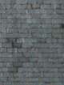

Si les variétés contemporaines,
soit synthétiques (reconstituées) soit très sélectionnées, ne
présentent qu'assez peu d'intérêt par leur manque de porosité (cet obstacle
pouvant être dépassé avec les enductions contemporaines) et leur aspect souvent
sombre, les ardoises
"rustiques", en général beaucoup plus claires, sont tout à fait
utilisables. Elles sont assez peu coûteuses, leur porosité sied très bien à
une enduction aisée et correcte, elles peuvent être nivelées ou légèrement sculptées et
polies ; enfin elles sont nettement plus solides que le plâtre. Leurs
dimensions sont relativement réduites (souvent aux alentours de 60 cm), mais il est possible de les découper et
de les assembler. Elles constituent un matériau naturel pratiquement prêt à
l'emploi pour la peinture, le dessin et même la photographie.
Support/substrat
Les sculpteurs ne l'ont pas totalement délaissée mais il faut reconnaître
qu'ils l'emploient peu. Ils évitent l'emploi des ciseaux car elle est trop
cassante. Limes et autres outils abrasifs divers sont donc les outils
généralement employés.
L'ardoise fait partie des matériaux qui se prêtent à des techniques
vraiment mixtes, picturales et sculpturales. Sa spécificité réside dans sa
disponibilité : elle est naturelle, peu coûteuse et abondante.
Couleur,
matériau pigmentaire, charge
Certains fabricants proposent des pigments réalisés avec de l'ardoise
broyée. Entre autres, selon François Perego,
cette poudre d'ardoise est le constituant principal du
gris Davy, adjoint d'autres pigments (p. 64).
On connaît des ardoises blanches, pourprées, bleutées, verdâtres, sombres,
plus ou moins métallisées.
Le plus souvent, dans nos esprits l'ardoise est associée
à un gris : gris d'ardoise, gris de schiste, farine d'ardoise (ibidem F.
Perego), d'aspect légèrement bleuté. C'est l'ardoise de l'écolier ou celle du
toit de la maison d'en face. Ce type d'ardoises n'affiche pas une véritable
couleur bleue, mais la teinte aurait quand même été suffisante pour servir, en
poudre, à falsifier de l'indigo (Encyclopédie méthodique, vol. 8, Félix
Vic d'Azur, Jean le Rond d'Alembert, édition 1782, p. 219).
Bien sûr, les toitures reflètent souvent le bleu du ciel. Cependant, il n'est
pas à exclure que cette légère coloration doive aussi quelque chose à la
potasse, soit plus précisément à une oxydation du fer
(présent dans différentes argiles et ardoises) qui serait très marginale mais
comparable dans le principe à celle qui est à l'oeuvre dans le
bleu de Prusse. Rien de confirmé
dans cette information, mais l'appellation "ardoise potasse" existe réellement
et la présence de quelques pourcents de cette substance dans certaines ardoises
est mentionnée dans différentes documentations (qui sembleraient cependant se
copier les unes les autres). Pas de certitude donc.
Le graphite est mentionné comme constituant de certaines variétés
d'ardoises. La magnésie également. François Perego
donne une indication utile : les ardoises chargées de pyrite (sulfate de fer FeS2)
seraient les seules variétés pouvant s'altérer en dégageant de l'acide
sulfurique par décomposition au contact de l'eau. Cette information cependant
n'est pas confirmée (y compris par le Reptox).
Enfin, André Béguin
mentionne (T. I, p. 480) le "filling up", charge solide et foncée faite de
poudre d'ardoise, utilisée - notamment pour les carrosseries - en mastic, en
vernis ou en apprêt. C'est selon lui dans ce dernier emploi (d'origine
anglo-saxonne) qu'il faudrait chercher l'origine et le sens du terme anglais
filling up alors que les autres variétés seraient davantage destinées à teinter.
Le caractère essentiellement siliceux et alumineux des ardoises doit
cependant nous inciter à éviter l'utilisation de la poudre en peinture à l'huile
ou du moins à vérifier (échantillons) sur une période assez longue (un à deux
mois) que son comportement n'est pas catastrophique comme pour tout
cristalloïde. Dans les résines
contemporaines, les peintures acryliques et l'aquarelle, elle devrait pouvoir trouver des
emplois comparables à celui du gris Davy mentionné ci-dessus. Mais encore une fois, c'est
avant tout un bon support.
Retour
début de page